Личный бренд · мероприятия · август 2026 · 5 площадок
Как опыт ведущего превратили в 10 тем, которые помогают выбрать его до звонка
Для Романа Седова собрали контент не вокруг одинаковых фотографий с праздников, а вокруг вопросов клиента: как пройдёт вечер, что делает ведущий за кадром, нужен ли диджей и как не получить юбилей «как у всех».
Показываем реальный финальный комплект. Тексты были согласованы, дизайн прошёл внутренние правки и был передан к публикации.
В пяти площадках подтверждены именно загруженные черновики. Выход всех материалов и бизнес‑метрики не приписываем.


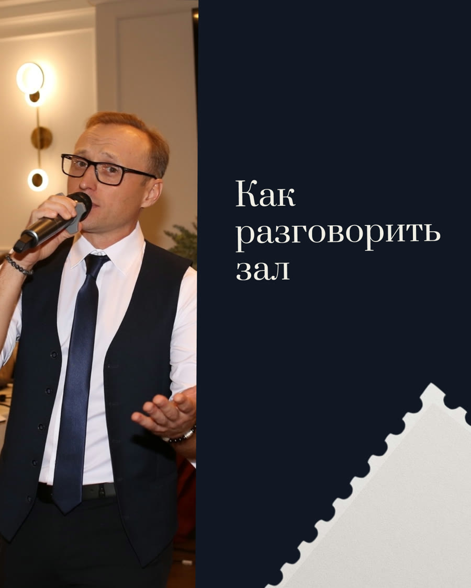
Задача контента
Сделать невидимую работу ведущего понятной до первой встречи
Красивые кадры показывают атмосферу, но не отвечают на тревоги заказчика. Поэтому каждый материал получил отдельную роль: объяснить, доказать, вовлечь или привести к бронированию.
Что важно было раскрыть
- как устроить содержательный вечер в ограниченное время;
- какая подготовка остаётся за кадром;
- как сделать юбилей личным, а не шаблонным;
- как ведущий работает с залом и диджеем;
- когда переходить от интереса к бронированию даты.
Как построили последовательность
Открыли месяц полезной каруселью, затем показали процесс и реальную историю юбилея. В середине сняли частые сомнения, добавили опыт и вовлечение. Завершили объяснением команды и сезонным предложением.
Маршрут читателя: польза → процесс → история → ответы → доверие → диалог → бронирование.
Экспертные ответы
Тайминг, мифы, работа с залом и роль диджея.
Процесс и доверие
Невидимая подготовка и накопленный опыт ведущего.
История клиента
Юбилей, который построили вокруг истории семьи.
Вовлечение
Выбор между классикой и сюрпризом.
Бронирование
Свободные даты сентября и ранняя запись на декабрь.
Готовый продукт целиком
Не обещаем контент — показываем все 10 публикаций
Переключайтесь между планом, лентой, логикой текстов, двумя полными каруселями и первой раскладкой календаря.
10 выходов
От полезного разбора к бронированию даты
Цели описывают задачу каждого материала, а не уже полученный результат.
- Тайминг свадьбы: что успеть за 5 часовЭкспертность и сохранения · карусель
- Работа, которую вы не видитеЗакулисье и доверие · пост
- Юбилей, который боялись делать как у всехИстория и отстройка · карусель
- Сентябрь: остались датыАктуальность и обращение · пост
- Три мифа о юбилеяхСнять сомнения · пост
- Опыт ведущего в цифрахДоверие · пост
- Как разговорить залПрактический совет · пост
- Классика или сюрпризВыбор и вовлечение · пост
- Ведущий и диджей — зачем оба?Объяснить услугу · пост
- Бронируем декабрьСезонное предложение · пост
Лента из 10 публикаций
Журнальная система вместо набора несвязанных афиш
Реальные фотографии с мероприятий объединены бумагой, рамками, тёмно‑синей палитрой и крупной типографикой. Нажмите на работу, чтобы рассмотреть её.
10 смысловых ролей
Каждый материал отвечает на отдельный вопрос заказчика
Показываем маркетинговую логику готового контента. Это не отчёт о достигнутых охватах или продажах.
01Тайминг свадьбыКарусель
Вместо абстрактного совета карусель раскладывает пятичасовой вечер на понятные этапы: встреча, стол, интерактивы, поздравления, первый танец и финал. Это помогает представить работу ведущего ещё до обсуждения сценария.
02Работа, которую не видит гостьЗакулисье
Тема переводит внимание с нескольких часов на сцене на подготовку: вопросы, сценарий, согласования и координацию. Так цена услуги объясняется через объём реальной работы.
03Юбилей не «как у всех»История
Карусель начинается со страха банального вечера и показывает решение через семейную историю, живые воспоминания, танцы и реакцию именинницы. Это доказательство подхода в формате короткой истории.
04Свободные даты сентябряПредложение
Короткий материал превращает внимание в конкретный повод обратиться сейчас. Историческую доступность дат на странице кейса не выдаём за актуальную.
05Три мифа о юбилеяхВозражения
Формат помогает разобрать типовые опасения и показать, что современный юбилей не обязан быть устаревшим или одинаковым для всех.
06Опыт ведущегоДоверие
Публикация визуально подтверждает накопленный опыт. Указанное внутри макета число относится к заявлению клиента и не используется lemonmedia как независимо проверенная бизнес‑метрика.
07Как разговорить залЭкспертность
Практический разбор показывает, что вовлечение гостей — это не случайность, а часть профессиональной работы ведущего с настроением и динамикой вечера.
08Классика или сюрпризВовлечение
Материал предлагает понятный выбор и приглашает аудиторию рассказать о своих предпочтениях. Такой вопрос снижает барьер для комментария и даёт почву для дальнейшего разговора.
09Зачем нужны ведущий и диджейОбъяснение
Тема разводит две роли и помогает понять, за что отвечает каждый участник команды. Это снимает вопрос о составе услуги до личной консультации.
10Бронирование декабряПредложение
Последний материал завершает месяц прямым сезонным шагом. Исторический призыв показан как часть готового контента, а не как актуальное наличие дат сегодня.
2 карусели · 14 слайдов
Две истории можно пролистать целиком
Первая объясняет структуру свадебного вечера. Вторая показывает реальный подход к юбилею через историю семьи.
Публикация 01 · 7 слайдов
Тайминг свадьбы: что успеть за 5 часов
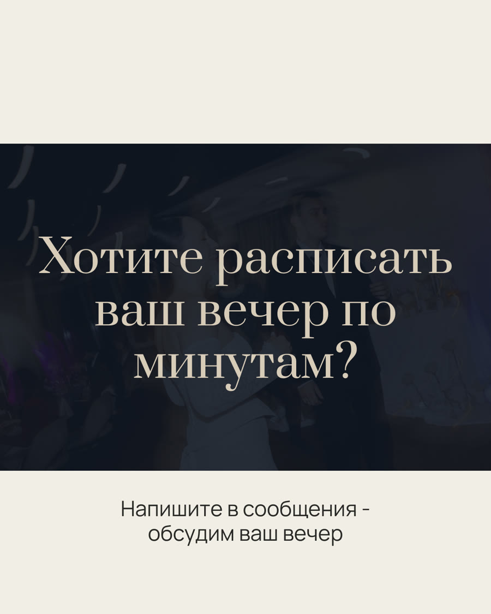
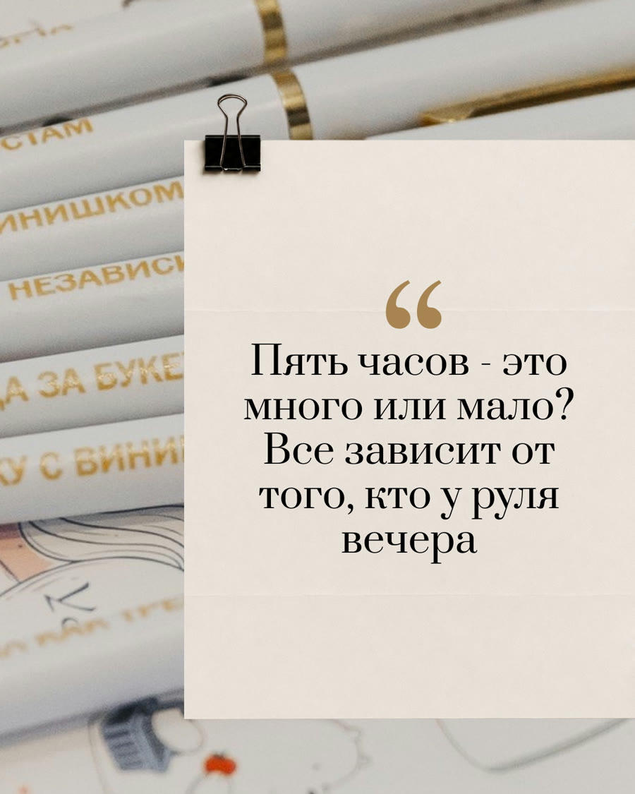
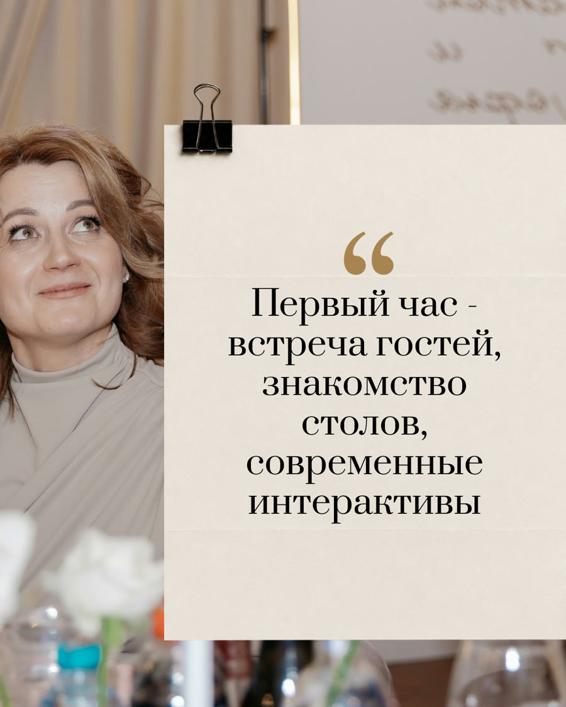
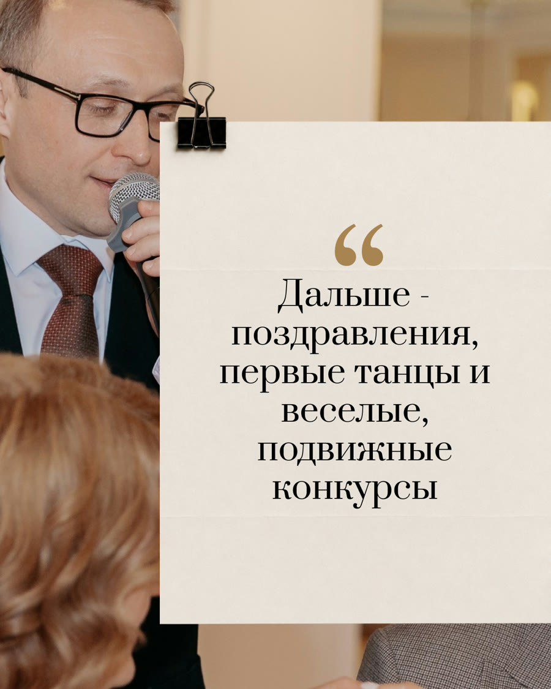
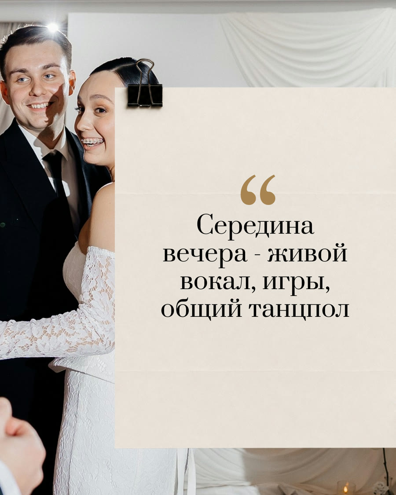
1 / 7
Публикация 03 · 7 слайдов
Юбилей, который боялись делать как у всех
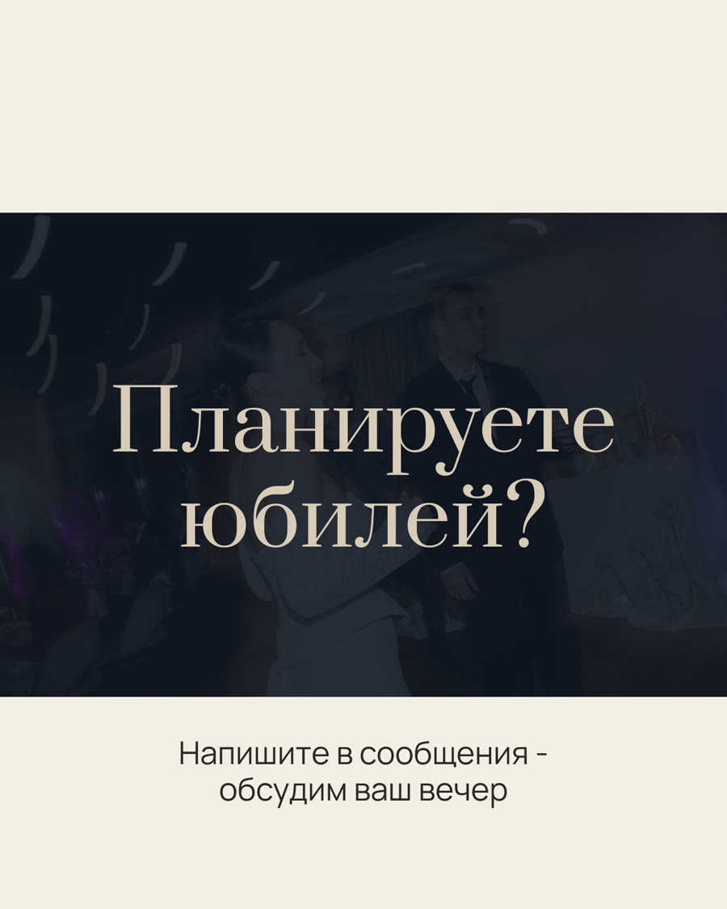
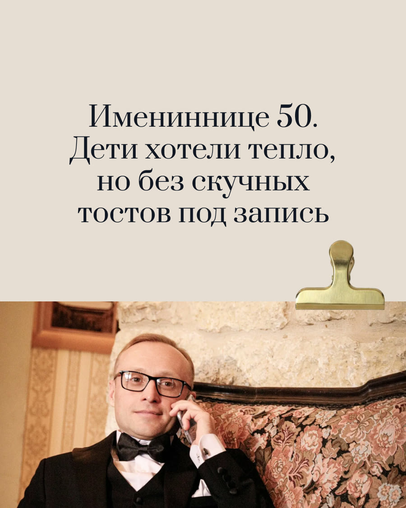
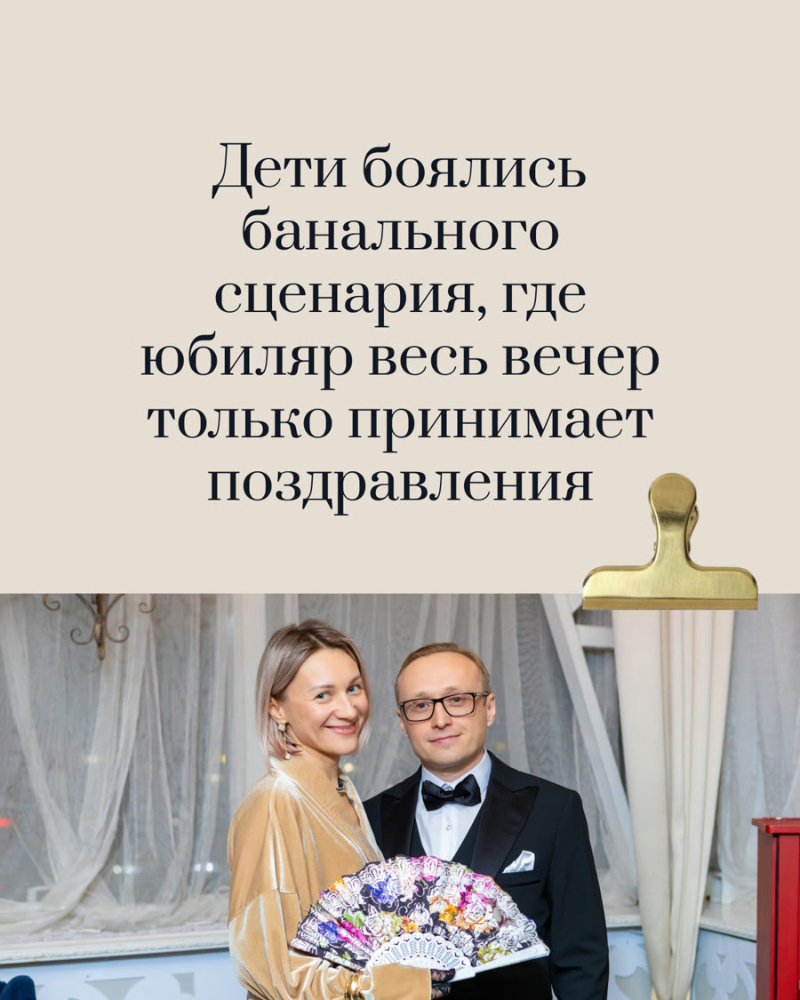
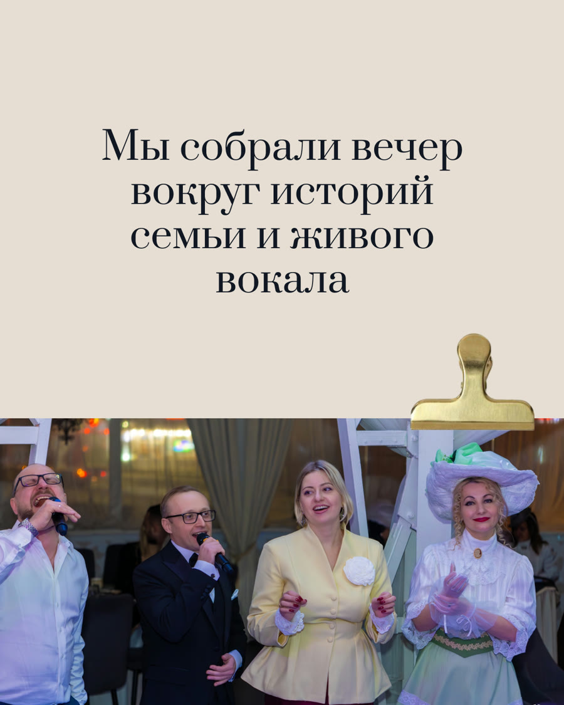
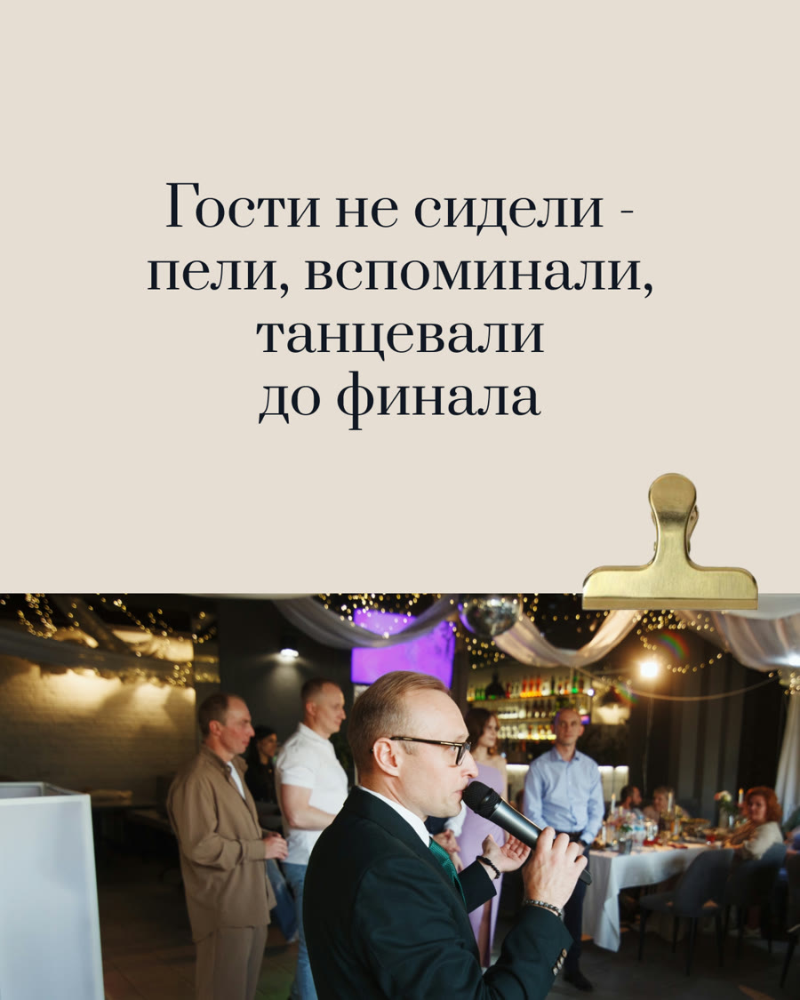
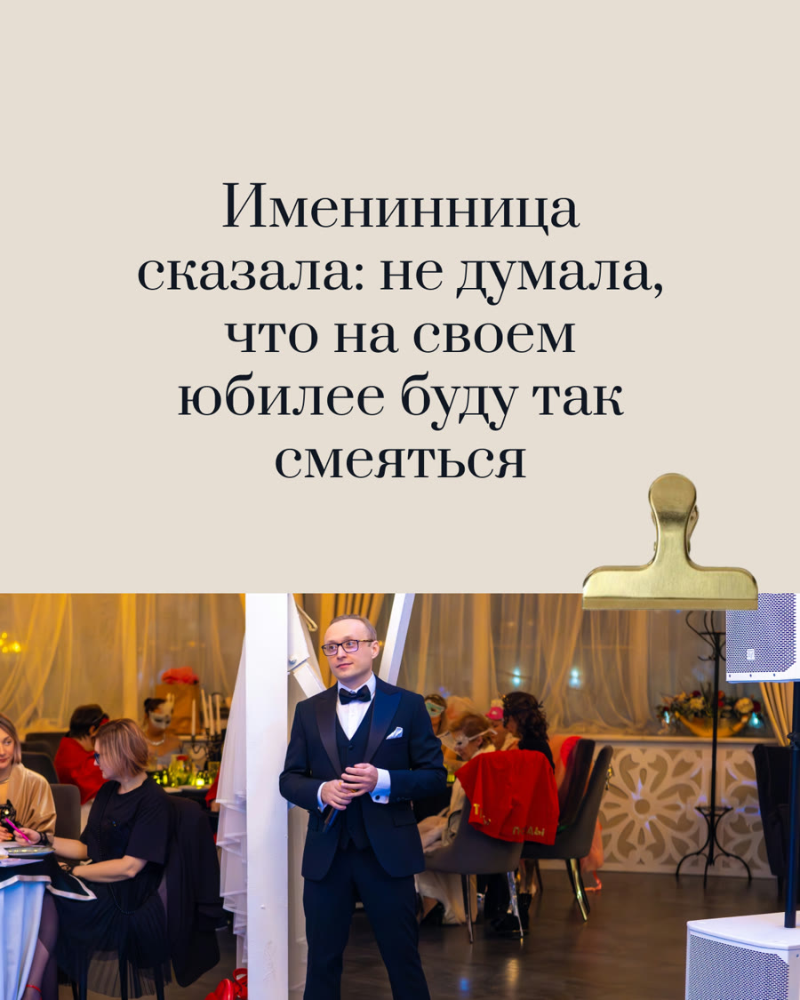
1 / 7
Первая раскладка · 1–28 августа 2026
10 черновиков с шагом раз в 3 дня
Все десять дат стояли на 10:00. Позже менеджер отметил, что текущий контент клиента находится в календаре до 12 сентября, поэтому этот экран показывает именно первую подтверждённую раскладку.
Август 2026
Тайминг свадьбы
Работа за кадром
История юбилея
Даты сентября
Три мифа
Опыт ведущего
Разговорить зал
Классика или сюрприз
Ведущий и диджей
Бронь декабря
Черновики загружены
ВКонтакте
Instagram
Telegram
Threads
MAX
Что видно без обещаний
Контент можно проверить глазами — от системы до каждого слайда
Здесь не один красивый макет, а весь готовый объём: 10 обложек, 14 слайдов, маркетинговая последовательность и календарь черновиков.
Что подтверждено
- согласованные тексты для 10 публикаций;
- 8 статичных постов и 2 карусели по 7 слайдов;
- единая журнальная визуальная система;
- внутренние правки дизайна и передача к публикации;
- загрузка черновиков сразу в 5 площадок;
- повторный заказ, принятый в производство.
Чего мы не заявляем
Нет прямого сообщения клиента об утверждении финального дизайна, подтверждения выхода всех десяти материалов в каждой сети и данных об охватах, заявках, продажах или окупаемости.
Продление №2 только принято в производство и не включено в готовый объём этого кейса. Даты и предложения внутри макетов относятся к периоду проекта.
Один пакет — пять каналов
Контент не остаётся папкой на компьютере
После подготовки пакет был разложен черновиками в едином календаре для ВКонтакте, Instagram, Telegram, Threads и MAX. Менеджер мог управлять одним планом вместо пяти отдельных таблиц.
Маркетолог
Собрал темы и тексты вокруг реальных вопросов заказчика мероприятия.
Дизайнер
Объединил фотографии в узнаваемую журнальную систему 4:5.
Менеджер и календарь
Передал финалы к публикации и загрузил черновики в пять площадок.
Нужен такой контент для личного бренда?
10 постов с маркетинговой логикой — от 4 990 ₽
Маркетолог делает план и тексты, дизайнер — визуал, менеджер ведёт процесс. Карусели добавляются в конструкторе, а готовый контент можно бесплатно разместить в пяти соцсетях.